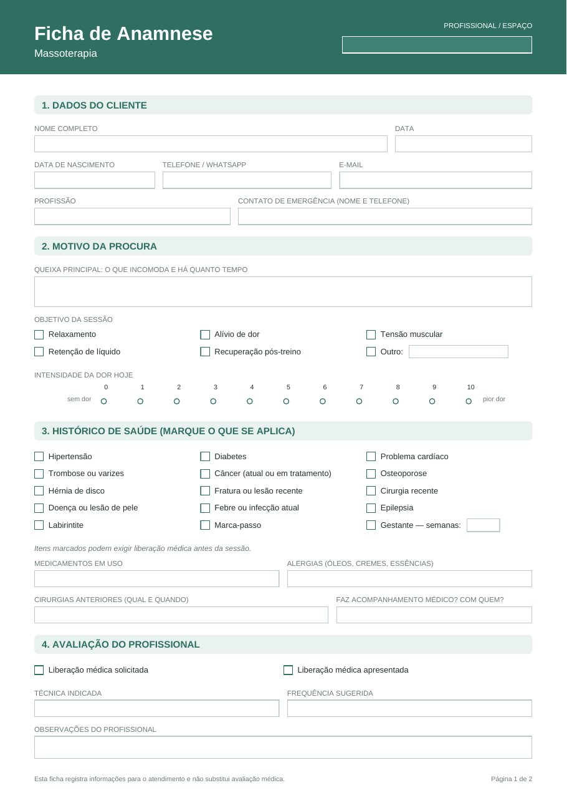
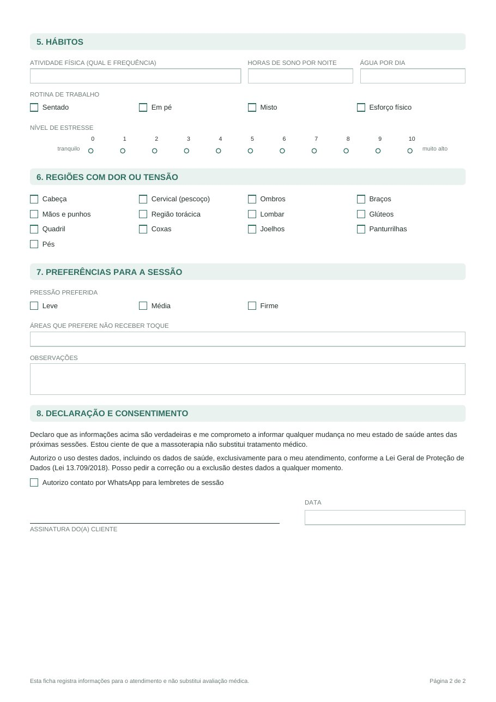

Histórico de saúde, contraindicações, mapa de dor e termo de consentimento num PDF só. É só colocar o nome do seu espaço e usar hoje: no celular, no computador ou impresso.


Pagamento seguro · Pix ou cartão · Garantia de 7 dias
Uma boa anamnese evita tudo isso em 5 minutos, antes da primeira sessão. E passa ao cliente a segurança de estar com alguém que leva o trabalho a sério.
Ficha de Anamnese para Massoterapia
pagamento único · PDF editável · acesso imediato
Quero minha ficha agoraVocê recebe o link de download no e-mail logo após o pagamento.
Se a ficha não servir para o seu atendimento, peça o reembolso em até 7 dias pelo e-mail da compra e devolvemos 100% do valor, sem perguntas.
Logo depois que o pagamento é aprovado, chega no seu e-mail o link para baixar o PDF. No Pix, isso leva poucos minutos.
Não. O PDF abre no navegador do computador, no leitor de PDF do celular ou no Adobe Reader, que é gratuito. Se preferir, é só imprimir e preencher à mão.
Pode. No topo da ficha tem um campo para o nome do profissional ou do espaço.
Com quantos quiser. Você salva uma cópia por cliente ou imprime quantas folhas precisar.
Para atendimentos de massoterapia em geral, como relaxante, terapêutica, desportiva e drenagem. As perguntas são as de uma anamnese básica, comuns a todas as técnicas.
Não. Ela organiza as informações do cliente e ajuda você a identificar quando pedir liberação médica antes da sessão.
Pagamento seguro · Pix ou cartão · Garantia de 7 dias